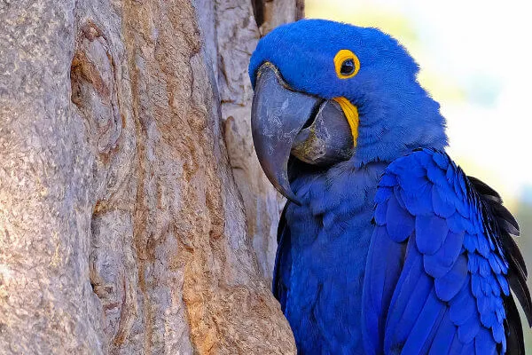
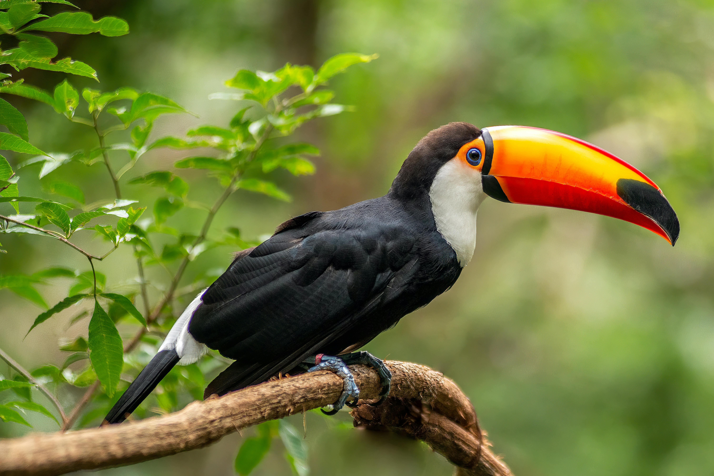
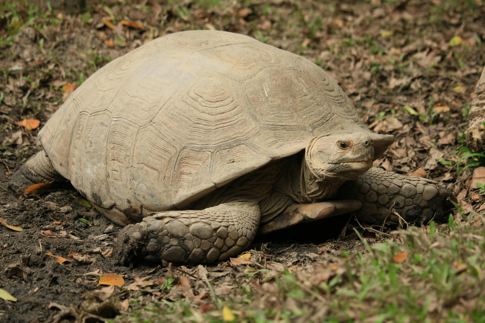

A arara é uma ave tropical muito colorida encontrada na América do Sul.
Saiba mais
O tucano é uma ave tropical conhecida por seu grande bico colorido e sua alimentação baseada principalmente em frutas.
Saiba mais
A tartaruga é um réptil de movimento lento, protegido por um casco resistente e adaptado à vida terrestre e aquática.
Saiba mais